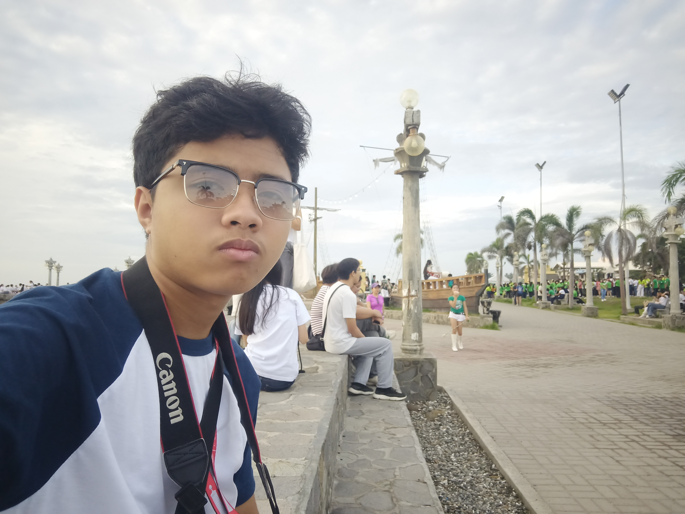
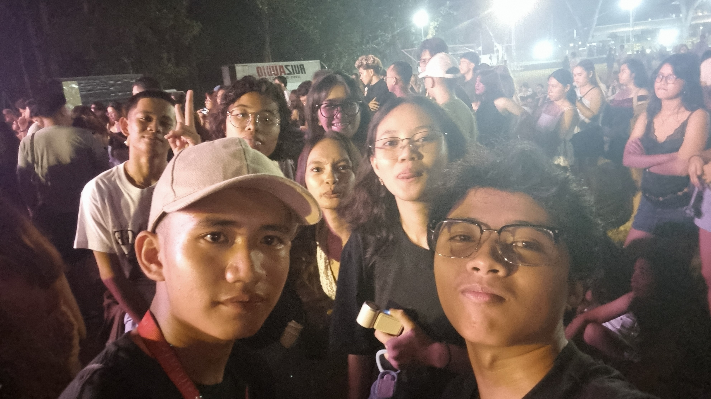
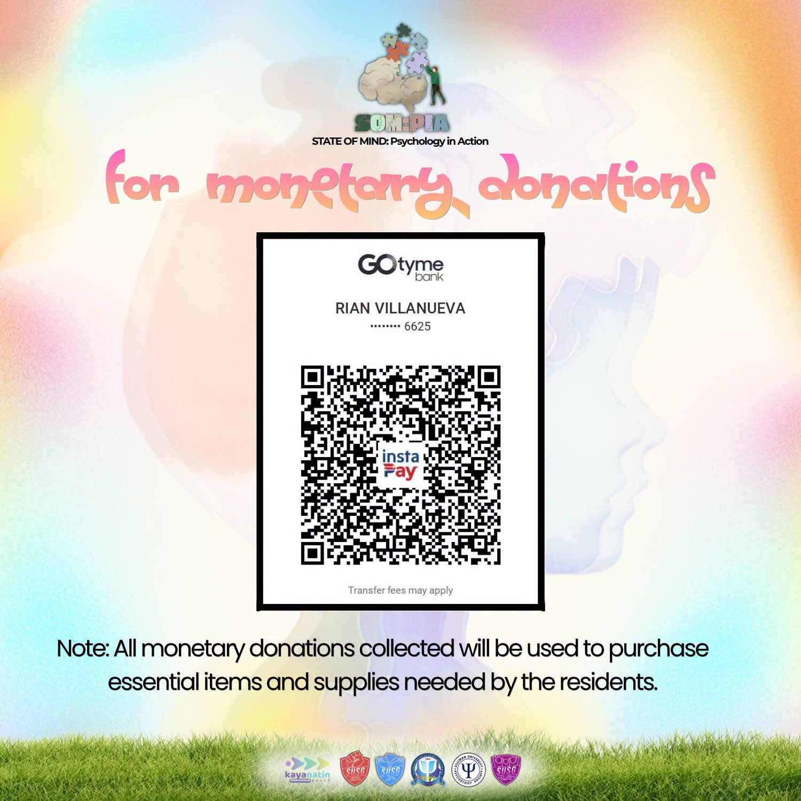
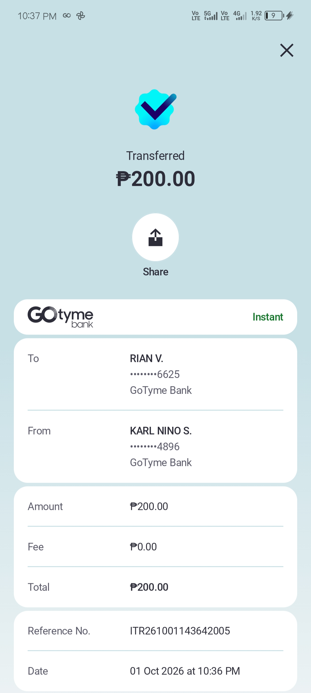
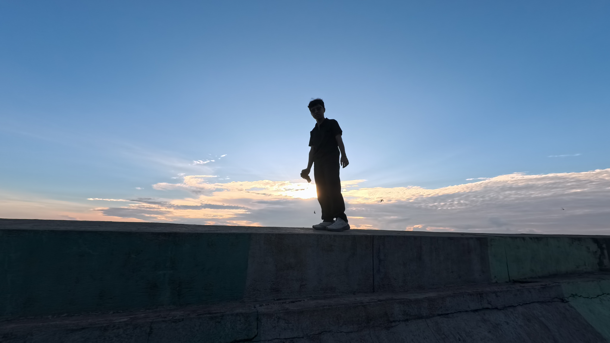
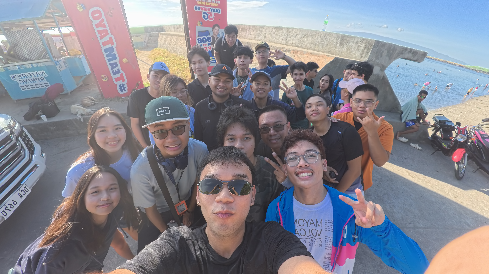
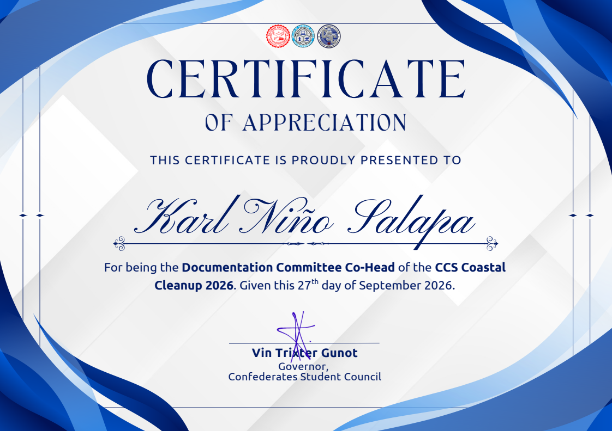
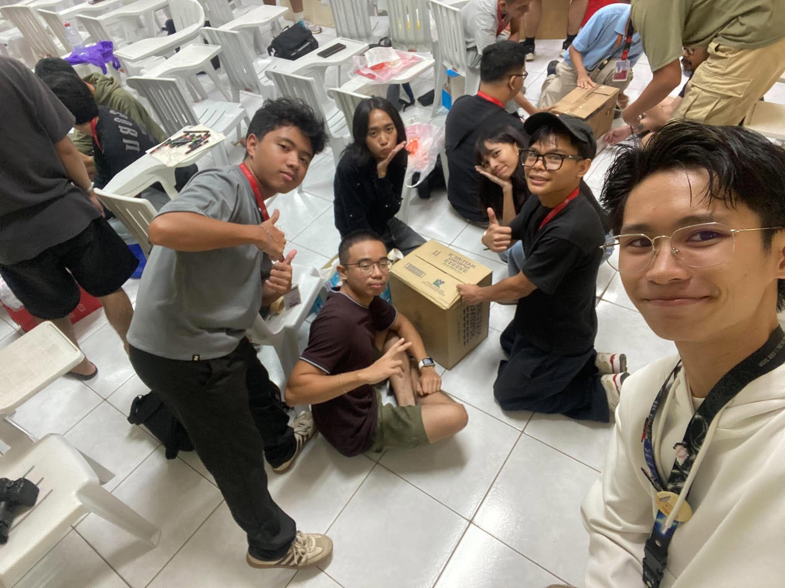
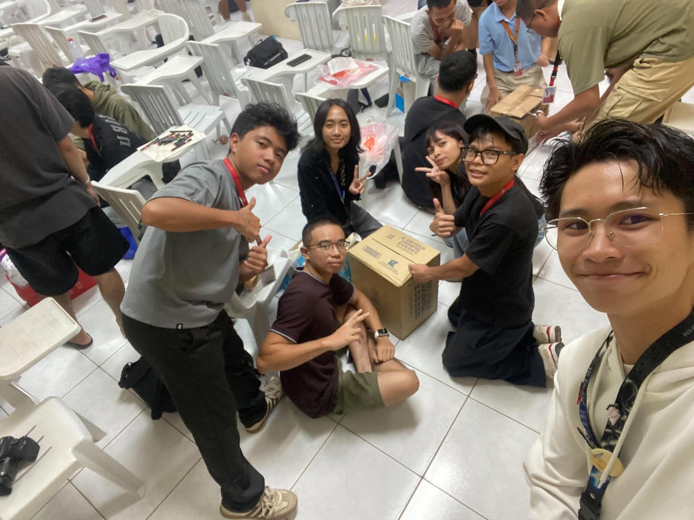
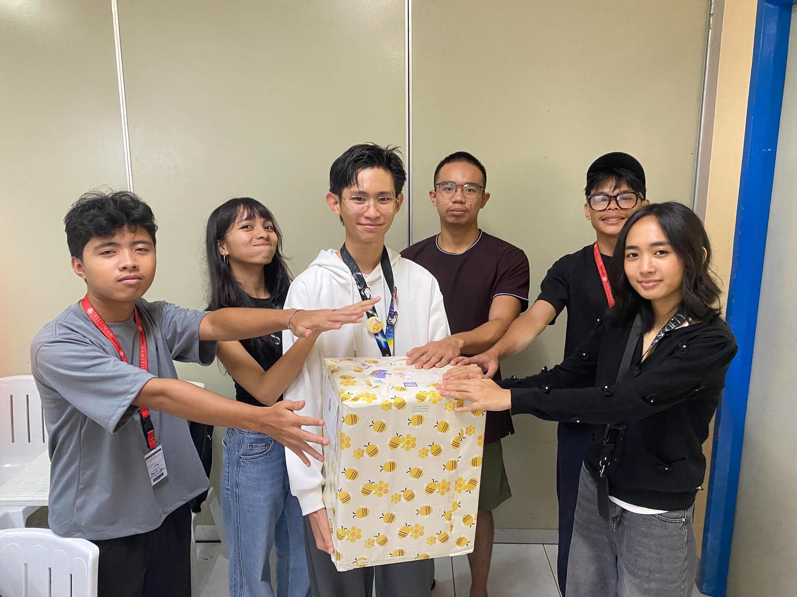

5 events, 10 points
Community
Serving and showing up for others.
About my Community experiences
My Community experiences help me understand the importance of cooperation, service, and social responsibility. Through participating in community activities, I hope to contribute to others, become more aware of the needs of people around me, and learn how even small actions can make a difference.
Nutri-Fit Walk
July 26, 2026, 4:30 AM
2 points
Nutri-Fit Walk
July 26, 2026, 4:30 AM 2 pointsReflection
On July 26, 2026, I participated in the Nutri-Fit Walk with students from CWTS, LTS, and ROTC. We started at The Pub and walked through SUMC, Cang's Inc., and Abenson before ending at Rizal Boulevard. My role was simply to participate in the walk.
I enjoyed the walk itself because it was my first time joining an activity like this. One unexpected moment was when a fire emergency happened in Dumaguete while we were walking. We noticed it and watched what was happening, but it did not disrupt the activity. Overall, the walk was a simple but enjoyable way to stay physically active.
Before joining the activity, I usually thought of physical activity as something tiring and boring. After experiencing the walk, I realized that being physically active can also be fun, especially when it is done as a group. I would definitely join another activity like this. Next time, though, I am bringing my water bottle.
Because of this activity, I am more open to being physically active and seeing exercise as something that can also be enjoyable.
Evidence of participation

Video evidence

Sillimusika (Concert for a Cause)
August 29, 2026, 6:30 PM
1 point
Sillimusika (Concert for a Cause)
August 29, 2026, 6:30 PM 1 pointReflection
I attended Sillimusika as an audience member with my friends Divine, Trench, Niña, and Jamela. We enjoyed the concert together, and one of the highlights for me was seeing December Avenue perform. They are my favorite band, and their songs are in almost every playlist I have on my music apps. Aside from the entertainment, the concert also supported a meaningful cause, as a portion of the ticket sales was allocated to support female farmers in La Libertad through the Silliman University Student Government's partnership with Tuburan for Rural Women Empowerment and Development.
What stood out to me was how the event combined entertainment with helping the community. I loved how the SUSG made it possible for students to enjoy a concert while also supporting female farmers. It made me realize that events like these can be more than just a source of entertainment because they can also create opportunities to help others.
Moving forward, I want to be more mindful of the ways I can contribute to the community. This experience taught me that enjoying something I love can also become an opportunity to support a good cause.
Because of this activity, I am more aware that entertainment can also serve a meaningful purpose by bringing people together and supporting communities in need.
Evidence of participation
Video evidence

State of Mind: Psychology in Action Donation Drive
September 23, 2026, 10:00 AM
1 point
State of Mind: Psychology in Action Donation Drive
September 23, 2026, 10:00 AM 1 pointReflection
On October 1, 2026, I voluntarily participated in the SOM:PIA (State of Mind: Psychology in Action) community outreach program through an online monetary donation. The program is led by Kaya Natin Youth Negros Oriental, the SUSG Advocacy Committee, NORSU Psychology Society, and the SUSG Social Services Committee to help people who are less fortunate.
I felt that donating was a good way to help people who are in need and share the blessings that I have received. Even though my donation was not a large amount, I realized that it could still contribute to helping someone who needs support.
This also connected with something I learned from the Galilean Fellowship: one way of expressing gratitude is by sharing the blessings we receive with others. Because of this, I would be willing to support similar activities in the future whenever I am able to contribute.
Because of this activity, I am more aware that even a small contribution can help others and can also be a way of expressing gratitude for what I have.
Evidence of participation


CCS Coastal Clean Up
September 27, 2026, 5:30 AM
3 points
CCS Coastal Clean Up
September 27, 2026, 5:30 AM 3 pointsReflection
On September 27, I participated in a Clean-Up Drive at Silliman Beach together with the CCS Freshies and the Confederate Student Council. I was part of the Documentation Committee as a Co-Head and worked as one of the videographers. Aside from documenting the activity, the participants helped clean the area by picking up trash and properly segregating it. The activity also gave everyone time to work together and contribute to keeping the beach clean.
I enjoyed the whole experience, especially doing my work as part of the Documentation Committee and, of course, the food prepared by the Food Committee. More importantly, helping clean an area and seeing the work being done made me realize that even simple physical work can be meaningful. It also felt good to contribute to something that benefits the community. Since picking up and segregating trash requires movement, I also saw it as a form of physical activity that is good for the body.
This activity did not really change my view on cleanliness because I have always believed that cleanliness is next to Godliness. However, it reminded me that keeping an area clean is not only about personal responsibility but can also be something a group can work on together. I would participate in another clean-up drive because it was both productive and enjoyable, especially when done with other students.
Because of this activity, I am more willing to take part in activities that help keep our surroundings clean while also appreciating the value of working together with others.
Evidence of participation


Video evidence

Sto. Niño Orphanage White Gift
October 7, 2026, 9:30 AM
3 points
Sto. Niño Orphanage White Gift
October 7, 2026, 9:30 AM 3 pointsReflection
We were informed that there was a voluntary gift donation for Sto. Niño Orphanage. We grouped ourselves and bought food and toiletries to give to those in need. It was a simple activity, but it gave us an opportunity to share what we had with others.
Honestly, it was an emotional experience for me. It felt really good to share the blessings I received from God with other people, especially those who needed them. It reminded me that the things we have are not only meant for ourselves, but can also be used to help others.
Moving forward, I want to be more willing to share what I have with those in need. This experience reminded me that even simple acts of kindness can make a difference.
Because of this activity, I am more grateful for the blessings I receive from God and more willing to share them with others, especially those who need help.
Evidence of participation

